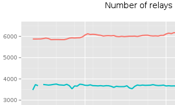
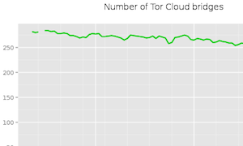
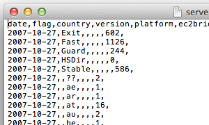
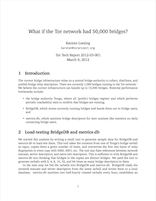
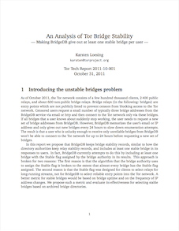

Home | Clients Relays Bridges Pluggable Transports Hidden Services | Bandwidth Performance Diversity | About
How many bridges exist to help censored users to connect to the network?
|
 Relays and bridges in the network |
 Tor Cloud bridges |
|
 Number of relays and bridges |
|
 What if the Tor network had 50,000 bridges |
 An analysis of Tor bridge stability-making BridgeDB give out at least one stable bridge per user |
This material is supported in part by the National Science Foundation under Grant No. CNS-0959138. Any opinions, finding, and conclusions or recommendations expressed in this material are those of the author(s) and do not necessarily reflect the views of the National Science Foundation.
"Tor" and the "Onion Logo" are registered trademarks of The Tor Project, Inc.
Data on this site is freely available under a CC0 no copyright declaration: To the extent possible under law, the Tor Project has waived all copyright and related or neighboring rights in the data. Graphs are licensed under a Creative Commons Attribution 3.0 United States License.
Design prototype note: The purpose of this category page is to explain what this category is about and to list metrics assigned to this category. It should be really easy to add new metrics to this list. This page should not contain metrics itself.
This page uses thumbnails of metrics to visualize what graphs or data the user can expect when clicking on metrics.